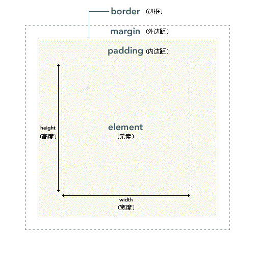

CSS 盒模型概述
CSS 盒模型概述
元素框的最内部分是实际的内容，直接包围内容的是内边距。内边距呈现了元素的背景。内边距的边缘是边框。边框以外是外边距，外边距默认是透明的，因此不会遮挡其后的任何元素。
提示：背景应用于由内容和内边距、边框组成的区域。
内边距、边框和外边距都是可选的，默认值是零。但是，许多元素将由用户代理样式表设置外边距和内边距。可以通过将元素的 margin 和 padding 设置为零来覆盖这些浏览器样式。这可以分别进行，也可以使用通用选择器对所有元素进行设置：
* {
margin: 0;
padding: 0;
}
在 CSS 中，width 和 height 指的是内容区域的宽度和高度。增加内边距、边框和外边距不会影响内容区域的尺寸，但是会增加元素框的总尺寸。
假设框的每个边上有 10 个像素的外边距和 5 个像素的内边距。如果希望这个元素框达到 100 个像素，就需要将内容的宽度设置为 70 像素，请看下图：

#box {
width: 70px;
margin: 10px;
padding: 5px;
}
提示：内边距、边框和外边距可以应用于一个元素的所有边，也可以应用于单独的边。
提示：外边距可以是负值，而且在很多情况下都要使用负值的外边距。
术语翻译
- element : 元素。
- padding : 内边距，也有资料将其翻译为填充。
- border : 边框。
- margin : 外边距，也有资料将其翻译为空白或空白边。